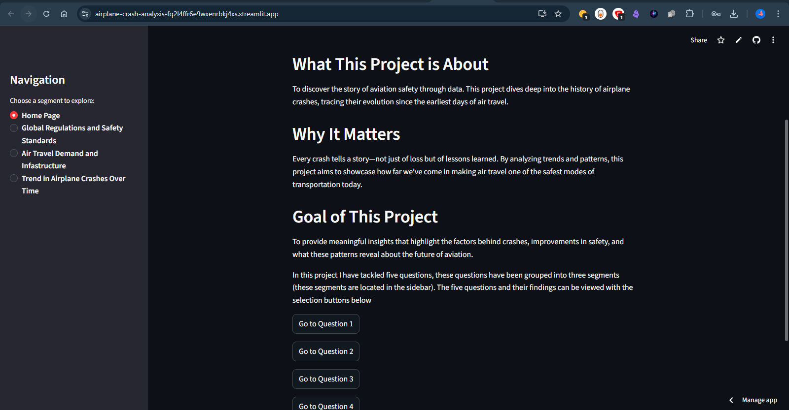
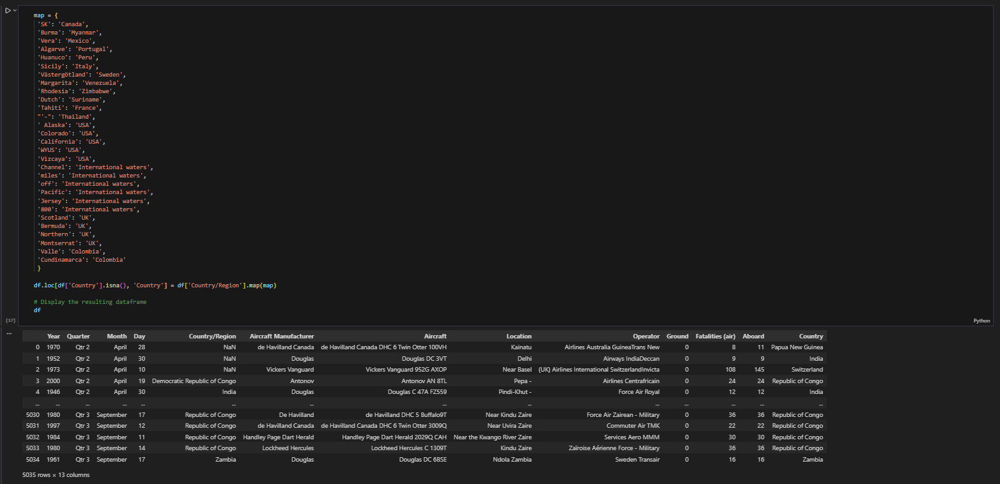
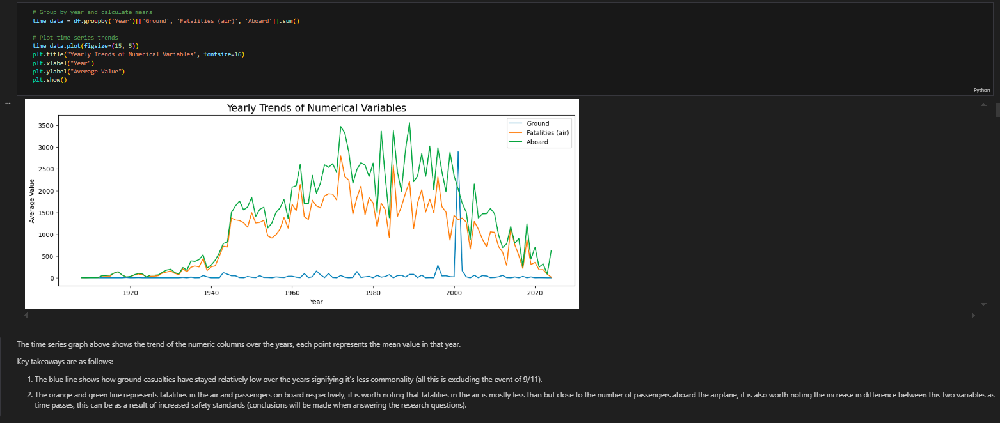

An end-to-end Python project exploring a century of aviation safety, deployed as an interactive Streamlit web application.
Aviation safety is a story of trial, error, and technological evolution. To understand this progression, I needed to analyze over 100 years of historical crash data to uncover long-term safety trends, identify the most dangerous eras, and measure the actual impact of major regulatory milestones on passenger survival.
As my debut Python data analysis project, I built a custom, end-to-end data pipeline. I utilized Pandas and NumPy inside Jupyter Notebooks for rigorous data cleaning, including fuzzy string matching to standardize manufacturer names, and dictionary mapping to replace incorrect values. After conducting EDA with Matplotlib and Seaborn, I deployed the final interactive visualizations as a live web application using Streamlit.

The live Streamlit application featuring charts that show aviation milestones, passenger volumes, and crash severity over time.
(Click image to view full size)
Raw CSV Dataset → Jupyter Notebooks (Pandas/NumPy for Cleaning & Dictionary Mapping) → EDA & Visualizations (Matplotlib/Seaborn) → Python Script (webapp.py) → Streamlit Cloud Deployment.
CSV → Jupyter → EDA → Python → Streamlit
Here's a glimpse into the technical work that powers this project:

Data Cleaning via Dictionary Mapping in Jupyter

Multi-line Chart from EDA showing Ground Casualties, Air Fatalities, and Passengers Aboard
Here's a sample of the Python code used to correct manufacturer names using fuzzy string matching and dictionary mapping:
# Function to correct manufacturer names using fuzzy string matching
def correct_manufacturer(name, valid_list):
if name not in valid_list: # Only process if name is not valid
# Find the best match using process.extractOne
match, score = process.extractOne(name, valid_list)
return match if score >= 80 else None # Correct if similarity score >= 80
return name
# Apply correction to the dataset
df["Aircraft Manufacturer"] = df["Aircraft Manufacturer"].apply(
lambda x: correct_manufacturer(x, valid_manufacturer_unique)
)
Here's what was discovered:
Peak Passenger Volume in 2019
Correlation: Demand vs. Crashes
Safest Era on Record
Historical Data Range